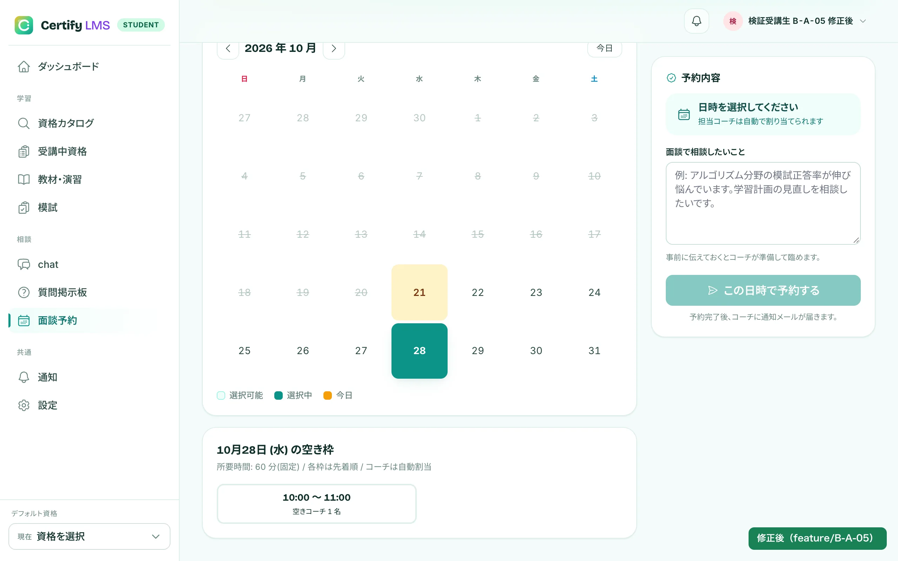
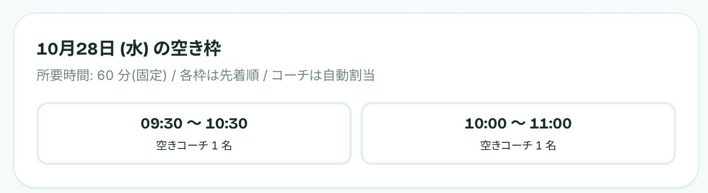
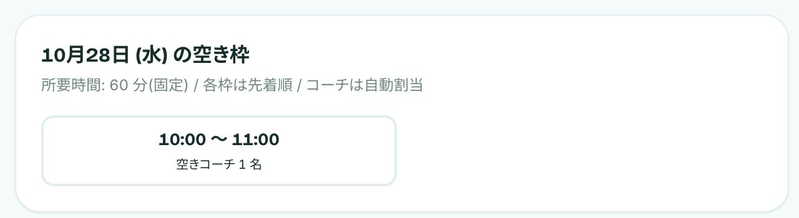

提供コードへの機能追加・不具合修正
Certify LMS
面談予約の競合対策と外部API連携
提供コードを読み、面談の同時予約とコーチ割り当てを修正。Google Calendar・Stripeなどの外部連携、権限制御、回帰テストの追加にも取り組んだ開発課題です。

- 制作形態
- 模擬案件・既存コード改修
- 担当
- 仕様確認・バックエンドの追加と修正・テスト。画面は必要な範囲で変更。
- 期間・状態
- 2026年9〜11月。現在は制作に一区切りついています。
- 公開範囲
- コード・画面を公開／操作デモなし
ターゲット・ペルソナ
設計上の想定
- ターゲット
- 資格学習の受講生・コーチ・管理者
- ペルソナ
- 教材で学びながら、残り回数と空き時間を確認してコーチとの面談を予約する受講生。
制作の背景
既存システムの改修
受講生・コーチ・管理者が使う資格学習アプリに、チケット単位で変更を加えました。画面デザインやベース機能の制作は担当範囲に含みません。
Issueごとに仕様と対象を確認し、既存コードを調べ、実装とテストを追加。判断した理由と動作確認の内容をPull Requestに残しながら進めました。
面談予約の不具合修正
予約回数の超過を防ぐ
同じ受講生が異なる時間枠へ同時に予約すると、両方の処理が残り回数を確認し、上限を超えて予約できる問題がありました。
DBトランザクションの中で受講生の行をロックしてから残数を読みます。先行する予約の消費結果を確認したうえで、次の処理が予約可能かを判断する順序です。
予約処理の実装を見る$student = User::query()
->whereKey($student->id)
->lockForUpdate()
->firstOrFail();
if ($this->quotaService
->remaining($student) < 1) {
throw new InsufficientMeetingQuotaException;
}既存コードの該当箇所を抜粋。ロックと残数確認を同じトランザクション内で行います。
60分の空きを確認
予約候補の表示とコーチの割り当てでは、開始時刻だけが空いていても不十分です。終了時刻まで対応できる枠を対象にし、Google Calendarの先約も確認します。
毎時00分から始まる60分の枠を展開し、コーチの対応可能時間の終了を超える枠は出しません。割り当て時にも60分全体が収まることを確認しています。空き枠を生成する実装を見る


外部通信を分離したテスト
Google Calendar・Gemini・Stripeのテストには代替の応答を用意し、意図しない外部通信を検出する仕組みを組み込んでいます。
同時予約のテストでは、残り1回の受講生から別プロセスで2件のリクエストを送り、予約と回数消費がそれぞれ1件に収まることを検証しています。コーチの割り当てや外部APIの異常時も、回帰テストの対象にしています。
制作範囲
制作概要
- ほかの変更
- Google Calendar連携、AI相談、追加面談の購入、修了証PDF、通知の非同期化、集計のキャッシュなど。
- 技術
- PHP 8.5 / Laravel 10 / MySQL 8.4 / Docker / PHPUnit
Google Calendar API / Gemini API / Stripe
提供されたベースコードと画面を使う模擬案件です。商用運用の実績はありません。
修正内容とテストは、GitHubで確認できます。